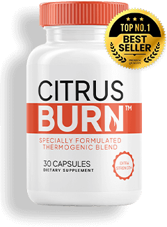
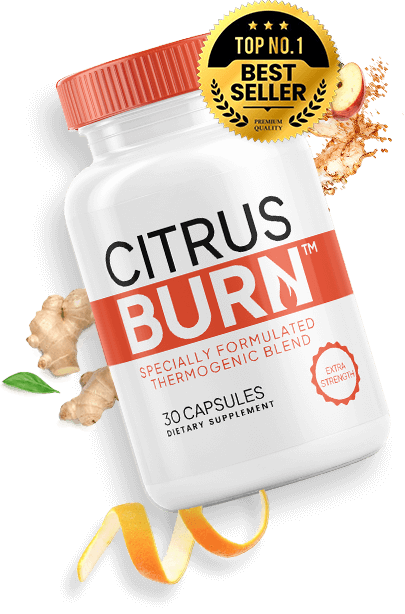

The Real Reason Most People Struggle to Lose Weight After 35
And the one powerful compound that breaks through it
Discover the thermogenic breakthrough scientists are calling revolutionary
The Thermogenic Resistance Problem
New studies show the real reason most people struggle to lose weight, especially after 35, is something called thermogenic resistance.
This condition prevents your metabolism from entering a natural fat-burning state known as thermogenesis, even if you're eating well or exercising.
Scientists found one powerful compound in the peel of Seville oranges that can break through this resistance. And it's now available in CitrusBurn™.
What Research From Harvard, Mayo Clinic & University of Barcelona Reveals
This rare compound increases thermogenesis by up to 74%, allowing you to burn stored fat continuously, even while sleeping.
What Is Thermogenesis?
Thermogenesis is your body's natural way of burning calories for energy. It powers everything from digestion and movement to body temperature and fat metabolism.
The Age 35 Metabolism Slowdown
But after age 35, thermogenesis slows, especially in women, leading to weight gain, low energy, and stalled progress.
The CitrusBurn Solution
The CitrusBurn™ formula activates fat-burning at the source with scientifically researched botanicals that support thermogenesis and break the cycle.
"Once your metabolism resets, your body naturally burns more calories, no matter what you eat."
Premium Natural Ingredients
Ginger
Enhances the thermic effect of food and promotes feelings of satiety without affecting metabolic and hormonal parameters

Seville Oranges
The rare compound that breaks through thermogenic resistance and increases fat-burning by up to 74%
The CitrusBurn™ Collection

CitrusBurn Original
Complete formula with scientifically-researched botanicals designed to support natural thermogenesis and break through thermogenic resistance

CitrusBurn Premium Plus
Enhanced formula with exclusive ingredients for maximum thermogenic activation and superior fat-burning results
Real Results from Real People

"More energy, better sleep, and I didn't change my diet. My body is finally burning fat naturally."
Sarah M. - United States"I can actually see the results! Finally something that actually works! My metabolism feels alive again."
Jennifer L. - Canada"Once your metabolism resets, your body naturally burns more calories. This is the breakthrough I've been waiting for."
Maria C. - AustraliaScientifically Validated
Backed by research from Harvard, Mayo Clinic, and the University of Barcelona
Why Choose CitrusBurn?
Scientifically Proven
Backed by prestigious institutions including Harvard, Mayo Clinic, and University of Barcelona
100% Natural Ingredients
Pure botanical ingredients with zero synthetic additives or harmful fillers
Works 24/7
Burns fat continuously, even while you sleep through natural thermogenesis activation
60-Day Guarantee
Satisfaction guaranteed or your money back with zero questions asked
Trusted Worldwide
Recommended by health professionals and trusted by customers across multiple countries
Fast Results
Most customers see visible changes within 2-4 weeks of consistent daily use
Frequently Asked Questions
What is Thermogenic Resistance?
Thermogenic resistance is a condition that develops after age 35 where your body's ability to burn calories for energy (thermogenesis) significantly slows down. This is especially common in women and leads to weight gain despite diet and exercise efforts.
How does CitrusBurn work?
CitrusBurn activates your body's natural fat-burning thermogenesis process using a rare compound from Seville oranges combined with ginger and other scientifically-researched botanicals. This allows your metabolism to burn stored fat continuously, even during sleep.
How long until I see results?
Most customers report noticing visible changes within 2-4 weeks of consistent daily use. Results vary based on individual metabolism, lifestyle factors, and starting point. We recommend using CitrusBurn for at least 60 days to experience full benefits.
Is CitrusBurn safe?
Yes. CitrusBurn is made with 100% natural ingredients and is manufactured in a FDA-certified facility. However, if you are pregnant, nursing, taking medication, or have a medical condition, consult your physician before using our products.
Do I need to change my diet or exercise?
No. CitrusBurn works naturally with your body's metabolism without requiring diet changes or exercise. However, combining it with a healthy lifestyle will accelerate and maximize your results even faster.
What is your guarantee?
We offer a full 60-day satisfaction guarantee. If you're not completely satisfied with your results, we'll refund 100% of your purchase price with zero questions asked.
How do I order?
Click the "Watch The Official Video Now" button above and follow the secure checkout process. It takes less than 5 minutes and your order will be shipped directly to your address.